A constant working memory for language models. Qwen3.5-9B · WebShop
Thesis. Humans operate with a constant working-memory capacity — at every moment we hold a fixed amount of recent context, and everything older is consolidated into long-term memory. Standard LLM training does not reflect this: under causal attention, later tokens attend to ever-more context and the first tokens are generated from almost nothing. We finetune the model to a constant working memory — a fixed-width window with a trainable soft-prompt standing in for prior experience — so every token is predicted from the same amount of context, with everything beyond the window living in the weights (ΔW).
Language models exhibit an attention sink: across most heads, a large share of every later token's attention is dumped onto the first token of the sequence — almost regardless of its content. Here the untrained base model (Qwen2.5-0.5B) on a wikitext sample — left: the attention map, where the dark first column is every later token attending back to token 1; right: attention received per position, where token 1 absorbs ≈ 0.42 while every other position gets near zero. The model leans heavily on its very first token and reads later tokens from an ever-growing context.
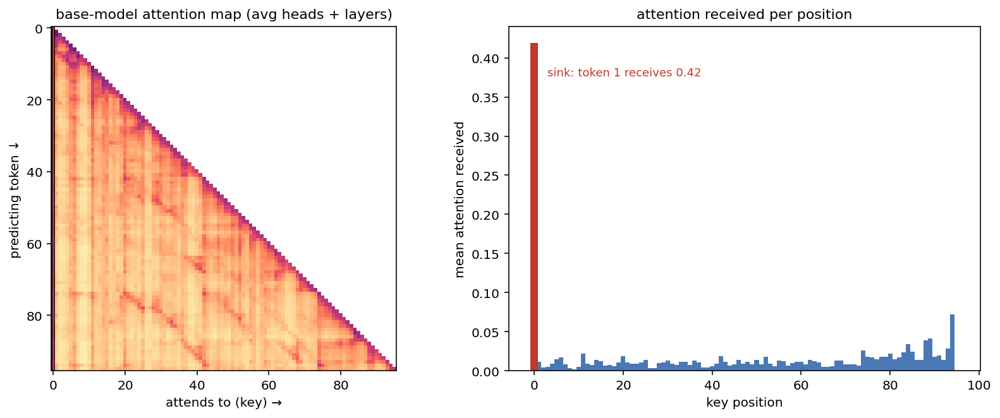
Where does the sink come from? We hypothesize it is a structural bias of the triangular causal mask. In a length-C sequence, position p can only be attended by the C − p queries that come after it — so earlier positions are attended by more tokens than later ones (position 1 by ~C queries, the last position by ~0). Training is pushed to front-load onto the earliest tokens, and the bias gets worse as the context grows longer. Evidence: left (Wang et al. 2025, arXiv:2504.02732, Fig 5a) — the measured sink rate (% of heads with mean attention to token 1 > 0.3) climbs with the training context length (nearly absent at 128 → prevalent at 2048); right — the same from the data side, the first-50 positions receive ever more attention than the last-50, the ratio growing 4× → 83× from ctx 128 to 2048.
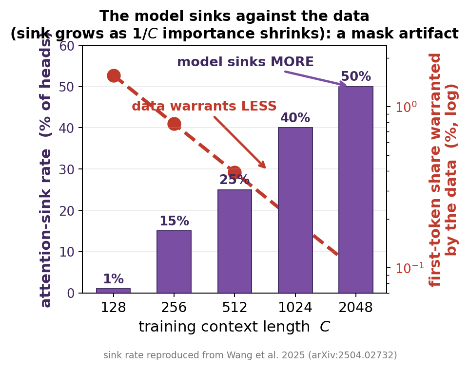
We test sliding-window attention: giving every predicting token the same context length — a constant working-memory capacity, more like the human brain than ever-growing causal attention — and ask whether it removes the sink. We tune a base Qwen2.5-0.5B under three schemes (in the diagrams below, each row = the token being predicted, attending to everything before it):
Continued pretraining — our experiment: plain text, no query/answer, every token predicted:
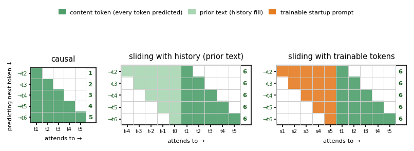
Instruction tuning (query→answer) — the same three schemes, for intuition:
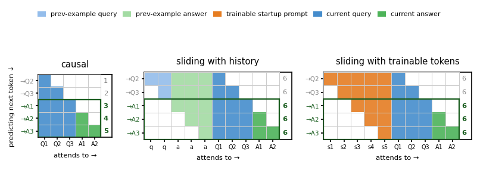
Training & eval. Qwen2.5-0.5B base, full fine-tune on wikitext-103 (length-1024 chunks, lr 5e-5, ~4M tokens, AdamW, grad-clip 1.0, bf16). Window W=256. We eval under full attention (16 held-out sequences, all layers) and measure each head's mean attention to the first content token (sink-rate = % heads > 0.3, the paper's ε). Crucially, to separate the training effect from any eval-prefix effect, the trained models below are eval'd with no prefix.
Result — base vs trained, per scheme, each evaluated under its own deployment (causal = full attention; windowed = windowed mask; startup = windowed + prompts), scoring the sink at the first token (left: mean attention, right: % of heads with mean attention to token 1 > 0.3). Causal training keeps the sink (56→61%); windowed halves it (26→12%); startup eliminates it (0%, mean attention 0.06→0.00). Separately, any prefix relocates the content sink — even the untrained base with a prefix drops to 0% (the StreamingLLM / sink-token effect), so a trainable startup prompt is just a learnable version of that sink token.
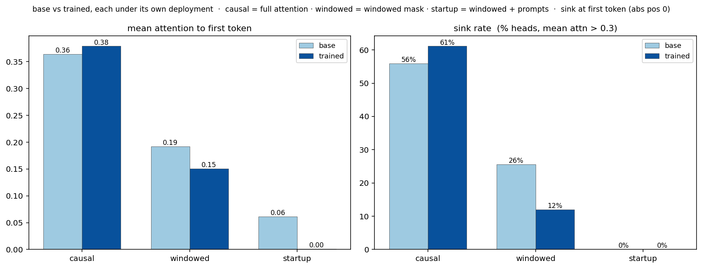
All four are genuinely distinct models (the hard fine-tunes moved ~6% of the weights, vs 0.2% for a token-thin run). This is an attention/sink result on in-distribution text (wikitext is in Qwen's pretraining) — not a knowledge-learning claim.
The real attention — with-context comparison (avg heads + layers; green dashed = prefix|content boundary, green box = predicted content tokens; black box = the sliding window W=64 each token sees — whole triangle = full attention, inside the box = windowed deployment; non-attended white). Top = base, bottom = trained. Causal (no context): both sink on position 0. History (real prior text as prefix) and startup (trainable soft-prompts as prefix): the base leans hard on the prefix's first token (the dark column at the boundary), the trained models do not — same context, same attention, only training differs.
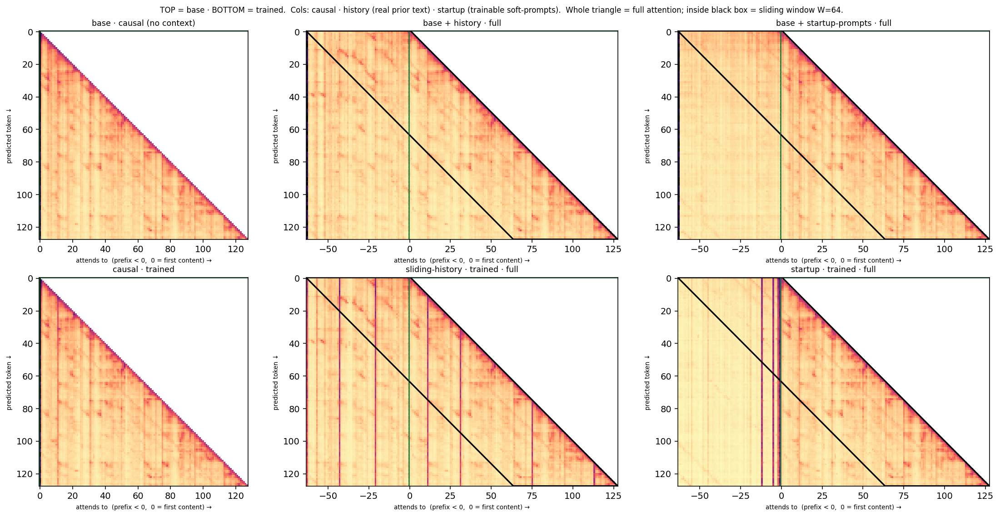
Against the fair baseline (base given the same history) — % of heads with mean attention > 0.3 to the history's first token (setup: 63 history + 256 content, W=64):
| full attention (learned tendency) | windowed mask (as deployed) | |
|---|---|---|
| base + history | 57.6% | 0.0% |
| sliding-history trained | 5.8% | 0.0% |
Same history, same attention: training cuts the first-context-token sink ~10× (57.6→5.8%); the window masks it to 0% at deployment; the content's own first token stays 0% throughout (the prefix relocates the sink off it).
What is the sink strip, in the actual text? The same example as the maps (63 history + 128 content, W=64), shown as flowing text with each token highlighted by the attention it receives from the content queries (redder = more; ‖ = where the predicted content begins). The sink is positional, not content.
Base — the lone bright token is the very first one, =, a meaningless header marker that absorbs the sink purely for being first (0.38):
Trained (sliding-history) — that first-token highlight is gone (0.08); attention spreads over recent content instead:
Does the constant working memory cost quality? Held-out wikitext perplexity, each prediction limited to a context budget (the triangular eval has the full 1024-token history available; lower budgets mask it down). The triangular (causal-trained) model needs the full 1024 history to reach 12.35 and degrades steeply when capped — 15.60 at 512, 19.09 at 256 (worse than the untrained base at 13.91, because windowing masks the first-token sink it leans on). The sliding-window-trained model reaches 12.81 at just 256 — matching the triangular model's full-1024 quality on a quarter of the context (startup-trained: 12.78).
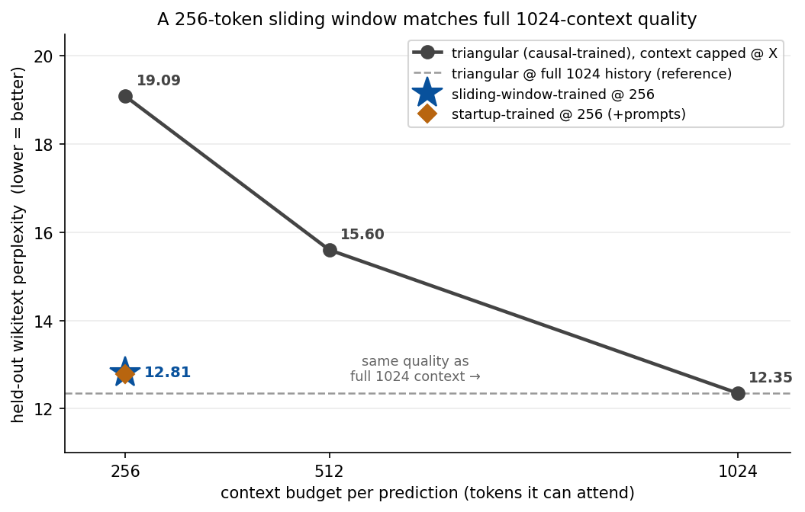
| model | context budget | held-out ppl |
|---|---|---|
| triangular (causal-trained) | 256 | 19.09 |
| triangular (causal-trained) | 512 | 15.60 |
| triangular (causal-trained) | 1024 (full history) | 12.35 |
| sliding-window-trained | 256 | 12.81 |
| startup-trained | 256 + prompts | 12.78 |
Does it hold on a real long-context task? — LongBench QA. Perplexity is in-distribution language modelling; we now test the constant working memory on downstream multi-hop long-context QA (LongBench: hotpotQA / 2WikiMultihopQA / musique — a short question whose answer is buried in a 7–15k-token evidence context). To isolate the attention mask from any task learning, we continue-pretrain base Qwen2.5-0.5B on plain wikitext-103 under either a full or a windowed (W=256) causal mask — pure language-modelling loss, no QA, no answer supervision — then evaluate zero-shot on LongBench, deployed as a plain sliding window of the last W tokens. Identical data and settings; the only difference is the mask. This is the same continued-pretraining that removed the sink in §3 above, now read out on a downstream task.
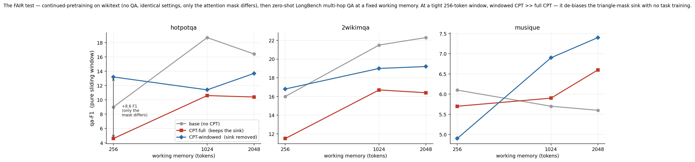
Reading the curves (qa-F1, n=100 per task; blue = windowed CPT, red = full CPT, grey = untrained base). (1) The clean mask result — holding the corpus fixed, windowed CPT beats full CPT at every budget, and the gap is largest at the tightest window: hotpotQA @256 13.2 vs 4.6, 2WikiMQA @256 16.8 vs 11.5. Continued-pretraining under full attention amplifies the triangle-mask sink — which a deployed sliding window then masks away, collapsing the model (full CPT @256 even falls below the untrained base). Windowed CPT removes that dependence, so the model still works inside a bounded memory. This is the §1–§3 attention-sink story, isolated: only the mask differs, no task was taught. (2) The gap closes as memory grows (1024–2048) — windowing matters most exactly when the working memory is smallest. (3) Honest read on the base line — base sits above both CPT models at 1024–2048: continued-pretraining on wikitext is a domain shift that trades some of Qwen's pretrained QA ability for wikitext LM. That the CPT models are, if anything, handicapped versus base — yet windowed still beats full — is exactly what makes this a fair isolation of the mask (no task leakage helping either tuned model).
Caveats: 0.5B, zero-shot, not instruction-tuned, plus the wikitext domain shift → absolute scores are low (5–22 F1); the windowed − full delta is the signal, not the level. musique (~5–9 F1) is near the floor for this model size. triviaQA is excluded: in LongBench its question field packs few-shot demos and the answer's own passage (~740 tok), so budget truncation can't remove the evidence — it cannot show working-memory pressure. A QA-domain continued-pretraining corpus (passages as plain text, still no answers) would let the de-biased model also beat base at every budget — the natural next step.
Does it scale to a real model? — Qwen3.5-9B. We move from the 0.5B proof-of-concept to the project model. Qwen3.5-9B is a hybrid: of its 32 layers only 8 are softmax attention (every 4th); the other 24 are linear/Mamba-style attention — i.e. ¾ of the model is already a constant-memory mechanism, and the attention sink lives only in the 8 softmax layers. We full-fine-tune just those 8 softmax blocks (freeze the 24 linear layers; 8-bit AdamW + gradient checkpointing on one 48GB GPU) on wikitext, at five native widths W ∈ {128, 256, 512, 1024, 2048} (each a separately trained model) — vs a full-attention control (triangle-FT), the untrained base, and a startup soft-prompt variant; only the mask differs. We then evaluate every model at every inference window — a train-window × deploy-window matrix of held-out wikitext perplexity — and also report StreamingLLM (4 sink tokens + recent) for the two baselines. (Chunk 3072 so the W=2048 column has a full window; absolute values run a touch higher than a shorter-chunk eval, but every cell shares the setup.)
| model | perplexity at inference window → | ||||
|---|---|---|---|---|---|
| 128 | 256 | 512 | 1024 | 2048 | |
| untrained baseline — base 9B off the shelf (plain window, or StreamingLLM as an inference trick) | |||||
| base 9B | 59.8 | 28.1 | 13.8 | 7.80 | 7.26 |
| base 9B + StreamingLLM | 9.33 | 8.47 | 7.91 | 7.58 | 7.28 |
| continued-pretraining baseline — full-attention CPT (triangle-FT), plain window | |||||
| triangle-FT | 33.7 | 18.2 | 8.66 | 6.96 | 6.59 |
| CPT + long-context-inference baseline — triangle-FT deployed with StreamingLLM (4 sink + recent W−4) | |||||
| triangle-FT + StreamingLLM | 7.88 | 7.39 | 7.03 | 6.83 | 6.56 |
| ours — windowed (one model per training window; bold = native, train==deploy) | |||||
| windowed-128 | 7.44 | 7.14 | 6.94 | 6.83 | 6.62 |
| windowed-256 | 7.82 | 7.19 | 6.93 | 6.79 | 6.57 |
| windowed-512 | 11.5 | 7.82 | 6.95 | 6.79 | 6.55 |
| windowed-1024 | 24.7 | 12.7 | 7.44 | 6.83 | 6.54 |
| windowed-2048 | 27.6 | 14.5 | 7.76 | 6.84 | 6.53 |
| ours — startup (windowed + trainable startup soft-prompt that fills the cold start; bold = native) | |||||
| startup-128 | 7.42 | 7.12 | 6.94 | 6.82 | 6.61 |
| startup-256 | 7.82 | 7.17 | 6.92 | 6.79 | 6.57 |
| startup-512 | 10.0 | 7.62 | 6.95 | 6.79 | 6.54 |
| startup-1024 | 23.8 | 12.5 | 7.40 | 6.83 | 6.53 |
| startup-2048 | 27.6 | 14.8 | 7.86 | 6.85 | 6.53 |
Reading the matrix. (1) Ours beats every baseline — including StreamingLLM — at tight windows. At deploy-128, windowed-128 (7.44) < base+StreamingLLM (9.33), triangle+StreamingLLM (7.88), and ≪ base (59.8) / triangle (33.7); at deploy-256, windowed-128 (7.14) < triangle+StreamingLLM (7.39). The baselines need the sink-token crutch and still lose; ours needs no sink tokens. (2) Train small, deploy anywhere. windowed-128 is nearly flat across every deployment window (7.44→6.62) — having learned to predict from just 128 tokens, it is robust to any window. Models trained on wide windows are fragile when deployed narrower — windowed-1024 blows up to 24.7 and windowed-2048 to 27.6 at deploy-128, because they learned to lean on context that is no longer there. (A model trained at W is fine deployed wider — it just gets extra context — but breaks deployed narrower: the lower-left triangle is clean, the upper-right is not.) (3) Startup tracks windowed, with a small edge when deployed narrower than trained — e.g. startup-512 vs windowed-512 at deploy-128 (10.0 vs 11.5) and deploy-256 (7.62 vs 7.82): the trainable prompt fills the cold start that a real-history window leaves empty, exactly where it helps. At/above the training window the two are interchangeable (the prompt falls out of the window), as on the 0.5B. (4) Direction of the sink — full-attention FT builds the pos-1 sink (triangle mean attn→token-1 = 0.107, highest), windowed FT removes it (0.080, lowest), base between (0.092).
Note: the 9B's softmax-layer sink-rate (% heads with mean attn>0.3 to token-1) is low for all (3–5%, vs the 0.5B's ~56%) — its linear-attention layers absorb the "always-attend-early" role, so the softmax layers sink weakly to begin with; the reduction shows up in mean attention and StreamingLLM-dependence, not the rate. The linear layers also mean these windows bound only the softmax path — the 24 linear layers still carry the full chunk — so "windowed-W" = softmax bounded to W, not a literal W-token total memory. Setup: 8 softmax blocks full-FT (1.68B params) per model, 500 steps, lr 1e-5, wikitext, RTX A6000.
Seeing the sink on the 9B. On the 8 softmax layers, full-attention (triangle) FT builds the token-1 sink to mean attention 0.124, windowed FT shrinks it to 0.092, and base sits between at 0.108. The full attention distributions are below.
The five schemes side by side — attention distributions. Qwen3.5-9B, averaged over the 8 softmax layers, equal x/y scale, single shared absolute color scale (one colorbar, no per-panel rescaling). The x-axis is token position relative to the first predicted token at x = 0 (solid cyan): context is negative (the prefix the predictions sit on — history or trainable prompts, to the left), and the prediction/content region is positive — each prediction attends its own position along the 45° self-attention diagonal. Cyan dashed = sliding-window back-edge (x = y−256); each prediction attends the band between it and the diagonal. Base (full causal) fills the whole triangle x∈[0,y] with the token-1 sink as the bright column at x=0. Base — windowed, untrained: the same base forced into the window before training. Windowed + history (trained): a clean constant-width diagonal band; early predictions reach back into the negative history region. Startup (trained): the trainable cold-start prompt occupies the negative region and slides out of the window for deep predictions. Persistent + startup (trained): a vertical bright stripe in the far-negative context — the 64 persistent registers attended by every prediction (magenta dotted = persist｜startup boundary) — beside the 192-token startup prompt and the sliding band.
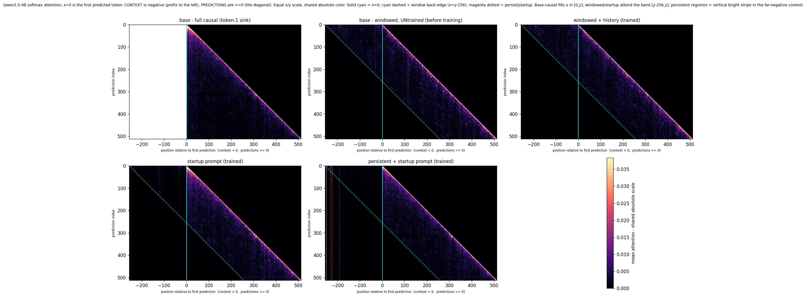
Status: implemented in lifetime_agent.py (--distill-window · soft-prompt via inputs_embeds · CE on r/a; settings unit-tested ✓, GPU smoke ✓ no OOM); n=200 result in progress. · ← earlier lifetime / CCD experiments
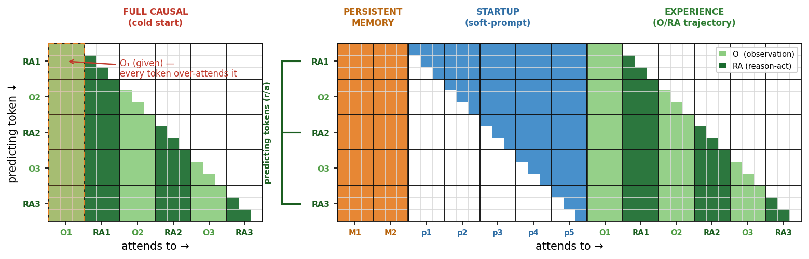
Left — instruction tuning's cold-start triangle: O₁ is over-attended by every later token (column O₁). Right — three contexts: persistent (always) + startup soft-prompt (slides out) + experience O/RA (grows in), summing to a constant width for every token.
Train: for each episode, distill the whole O/RA trajectory with the windowed soft-prompt + LoRA, holding the context length constant for every token, and predict the unmasked r/a (think/act) tokens (observations are context only). Then move to the next episode — continual, with the soft-prompt and ΔW carried over. Deploy: the soft-prompt pads the first step and slides out as O/T/A accumulates, so the agent acts with the same constant working memory it trained on (no train/deploy mismatch).
We SFT each scheme on HotpotQA-train (multi-hop QA, 10-paragraph distractor context ~1200 tok, loss on the answer span) under its own attention mask, then evaluate the same model under three inference deploys: full attention (unbounded ceiling), windowed (true constant memory, budget W), and StreamingLLM (sink + recent). W=256, dev F1, N=150. The blue windowed column is the regime the thesis is about; triangle→StreamingLLM is the fair training-free constant-memory baseline; triangle→full is the unbounded ceiling.
| training method | Qwen-0.5B | LLaMA-1B | LLaMA-3B | Qwen-7B | ||||||||
|---|---|---|---|---|---|---|---|---|---|---|---|---|
| full | win | str | full | win | str | full | win | str | full | win | str | |
| base (no FT) | 0.297 | 0.031 | 0.157 | 0.221 | 0.020 | 0.119 | 0.286 | 0.027 | 0.187 | 0.373 | 0.139 | 0.192 |
| triangle (full-causal) | 0.381 | 0.079 | 0.255 | 0.349 | 0.010 | 0.226 | 0.387 | 0.008 | 0.245 | 0.641 | 0.278 | 0.404 |
| sliding-history | 0.357 | 0.112 | 0.276 | 0.240 | 0.118 | 0.156 | 0.270 | 0.118 | 0.158 | 0.542 | 0.363 | 0.404 |
| + prefix (warmup) | 0.375 | 0.123 | 0.269 | 0.208 | 0.111 | 0.146 | 0.150 | 0.122 | 0.118 | 0.558 | 0.395 | 0.388 |
| + prefix + persist | 0.319 | 0.234 | 0.237 | 0.374 | 0.207 | 0.250 | 0.274 | 0.183 | 0.201 | 0.560 | 0.363 | 0.399 |
| + persist | 0.310 | 0.233 | 0.240 | 0.443 | 0.265 | 0.271 | 0.414 | 0.296 | 0.296 | 0.387 | 0.234 | 0.247 |
Read: base/triangle (full-causal) collapse under a plain window (lose the pos-0 sink) but recover under StreamingLLM; the windowed-trained schemes recover under windowing. At constant memory the best trained scheme (bold) beats the fair triangle+StreamingLLM baseline only on LLaMA-1B/3B (.265/.296 vs .226/.245); on Qwen-0.5B/7B it is a wash — so constant-memory training gives no clean QA-F1 gain over StreamingLLM; its value is the anchor-free mechanism, not raw F1. triangle→full (unbounded) is the ceiling.
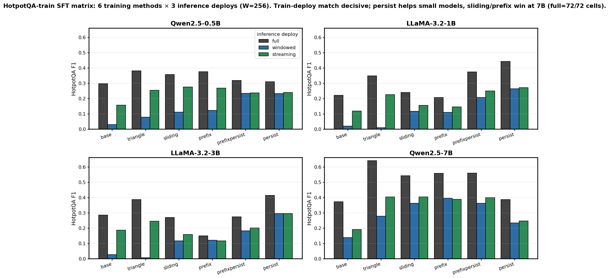
Answer-only vs CPT-style loss (windowed deploy). Predicting every token under the window (not just the answer) gives W× more signal to relocate the sink. It lifts pure sliding at every scale and fixes the 7B persist (the answer-only loss undertrains the registers at scale) — but stays ~tied with StreamingLLM.
| windowed F1, W=256 | Qwen-0.5B | LLaMA-1B | LLaMA-3B | Qwen-7B |
|---|---|---|---|---|
| sliding (answer-loss) | 0.112 | 0.118 | 0.118 | 0.363 |
| sliding (CPT-loss) | 0.126 | 0.137 | 0.170 | 0.395 |
| persist (answer-loss) | 0.233 | 0.265 | 0.296 | 0.234 |
| persist (CPT-loss) | 0.205 | 0.265 | 0.249 | 0.384 |
| triangle+StreamingLLM (baseline) | 0.255 | 0.226 | 0.245 | 0.404 |
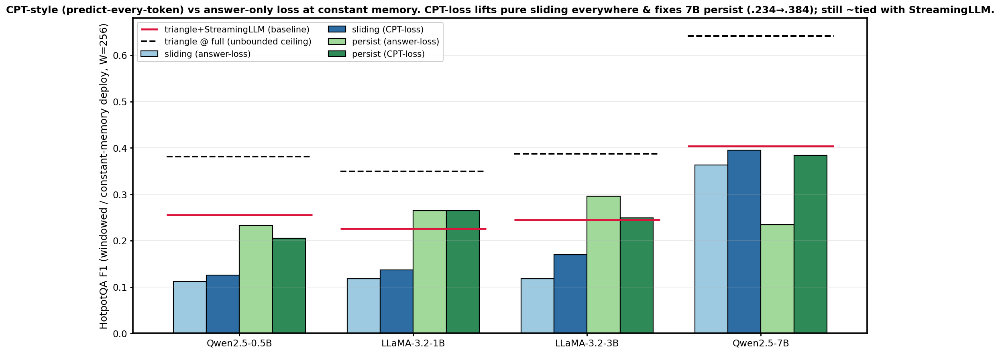
W=1024 + CPT-loss — the decisive regime. At a wide window (~85% of the context, so the information bottleneck mostly lifts) and equal CPT-loss for every scheme (the fair test), the constant-memory persist (registers) beats triangle+StreamingLLM on 3 of 4 models (LLaMA-1B/3B/7B) and even beats full attention on LLaMA-3B (.595 > .536). The warmup prefix hurts (prefixpersist collapses on 3B, .595→.312); pure sliding still loses. So the gain is the constant-memory attention, not the CPT fact-learning (the baseline gets that too). Windowed (constant-memory) F1, bold = beats the StreamingLLM baseline:
| windowed F1 · W=1024 · CPT-loss | Qwen-0.5B | LLaMA-1B | LLaMA-3B | Qwen-7B |
|---|---|---|---|---|
| sliding-history | 0.152 | 0.247 | 0.318 | 0.553 |
| persist (registers) | 0.365 | 0.427 | 0.595 | 0.600 |
| prefixpersist (regs + warmup) | 0.365 | 0.351 | 0.312 | 0.597 |
| triangle + StreamingLLM (baseline) | 0.387 | 0.359 | 0.479 | 0.580 |
| triangle @ full (ceiling) | 0.431 | 0.456 | 0.536 | 0.635 |
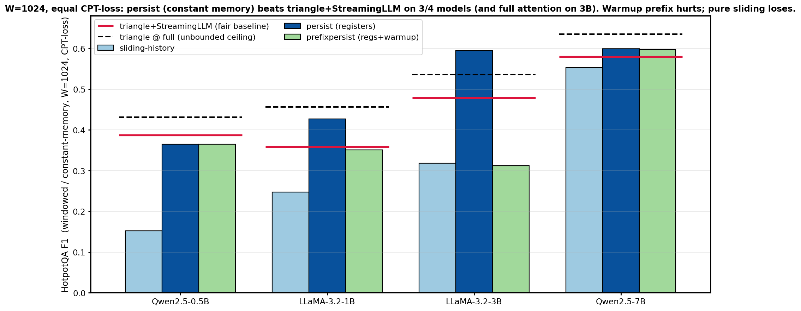
Status: matrix in tmp/hotpot_matrix.py. W=256 (answer-only + CPT) and W=1024 (CPT, fair triangle baseline) complete; LLaMA-3B prefixpersist-streaming cell pending.